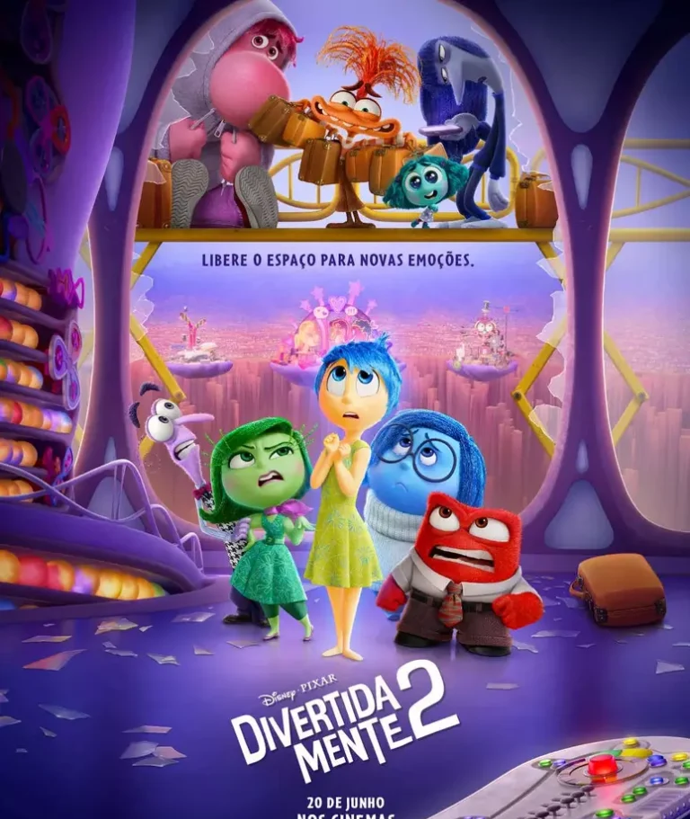
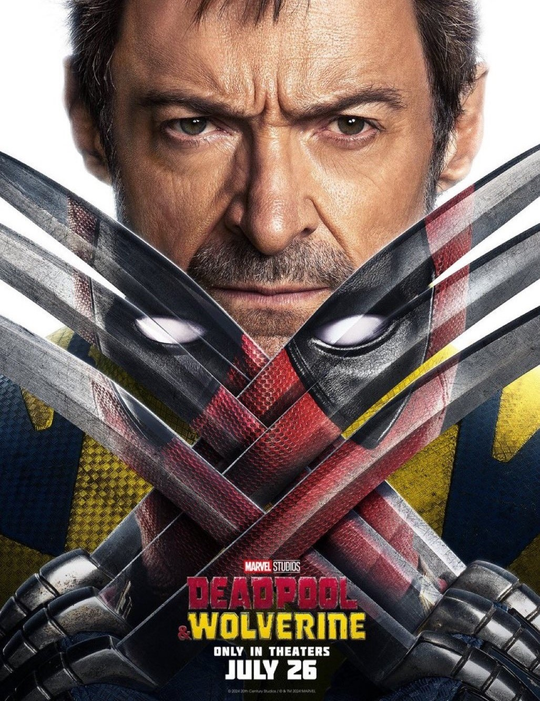

Divertida Mente 2
Divertidamente 2 marca a sequência da famosa história de Riley (Kaitlyn Dias). Com um salto temporal, a garota agora se encontra mais velha, com 13 anos de idade, passando pela tão temida pré-adolescência. Junto com o amadurecimento, a sala de controle mental da jovem também está passando por uma demolição para dar lugar a algo totalmente inesperado: novas emoções. As já conhecidas, Alegria (Amy Poehler), Tristeza (Phyllis Smith), Raiva (Lewis Black), Medo (Tony Hale) e Nojinho (Liza Lapira), que desde quando Riley é bebê, eles predominam a central de controle da garota em uma operação bem-sucedida, tendo algumas falhas no percurso como foi apresentado no primeiro filme. As antigas emoções não têm certeza de como se sentir e com agir quando novos inquilinos chegam ao local, sendo um deles a tão temida Ansiedade (Maya Hawke). Inveja (Ayo Edebiri), Tédio (Adèle Exarchopoulos) e Vergonha (Paul Walter Hauser) integrarão juntos com a Ansiedade na mente de Riley, assim como a Nostalgia (June Squibb) que aparecerá também.
Deadpool & Wolverine
Deadpool & Wolverine reúne o icônico mercenário tagarela Wade Wilson (Ryan Reynolds) e o poderoso mutante Wolverine (Hugh Jackman) em uma aventura explosiva, escrita e produzida pelos mesmos talentos por trás de Deadpool (2016) e Deadpool 2 (2018). Wade Wilson desfruta de um momento de aparente calma ao lado de Vanessa (Morena Baccarin) e seus amigos e, em contra partida, Wolverine se recupera de seus ferimentos. Um têm os seus caminhos cruzados com o outro, dando início a uma improvável aliança. Juntos, eles enfrentam um inimigo formidável em comum, desencadeando uma jornada repleta de ação, humor e reviravoltas surpreendentes. Deadpool & Wolverine promete ser uma aventura épica, cheia de referências aos quadrinhos e momentos de pura adrenalina, proporcionando aos fãs uma experiência única e inesquecível no universo dos super-heróis.
Alien
Romulus
Dirigido por Fede Álvarez, Alien: Romulus é um thriller de ficção científica que retorna às raízes da franquia de sucesso Alien, o 8º Passageiro (1979). Ambientado entre os eventos do filme de 1979 e Aliens, O Resgate (1986), a trama acompanha um grupo de jovens colonizadores espaciais que se aventuram nas profundezas de uma estação espacial abandonada. Lá, eles descobrem uma forma de vida aterrorizante, forçando-os a lutar desesperadamente por sua sobrevivência. O elenco inclui Cailee Spaeny, David Jonsson, Archie Renaux e Isabela Merced. A produção é assinada por Ridley Scott, enquanto o roteiro é de autoria do próprio Álvarez, baseado nos personagens criados por Dan O'Bannon e Ronald Shusett. Com essa nova abordagem, o filme busca resgatar a atmosfera claustrofóbica e o terror psicológico que consagraram a franquia, prometendo agradar tanto aos fãs antigos quanto aos novos espectadores.
É Assim que Acaba
É Assim Que Acaba, longa do diretor Justin Baldoni, é uma adaptação cinematográfica do livro de mesmo nome da autora Collen Hoover. Na trama, Lily Bloom (Blake Lively) é uma mulher que, após vivenciar eventos traumáticos na infância, decide começar uma vida nova em Boston e tentar abrir o próprio negócio. Como consequência dessa mudança de vida, Lily acredita que encontrou o amor verdadeiro em Ryle (Justin Baldoni), um charmoso neurocirurgião. No entanto, à medida que o relacionamento se torna cada vez mais sério, também surgem lembranças de como era o relacionamento de seus pais. Até que, repentinamente, Atlas Corrigan (Brandon Sklenar), seu primeiro amor e uma ligação com o passado - uma alma gêmea, talvez? - retorna para a vida de Lily. As coisas se complicam ainda mais, quando um incidente doloroso desencadeia um trauma do passado, ameaçando tudo o que Lily construiu com Ryle. Agora, com seu primeiro amor de volta em sua vida, ela precisará decidir se tem o que é preciso para levar o casamento adiante.